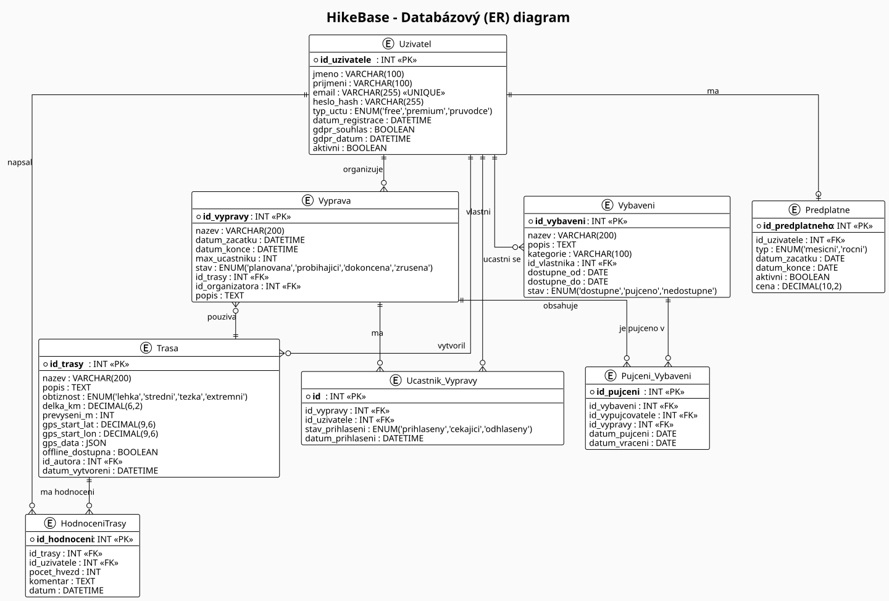
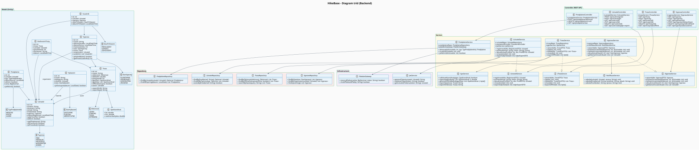
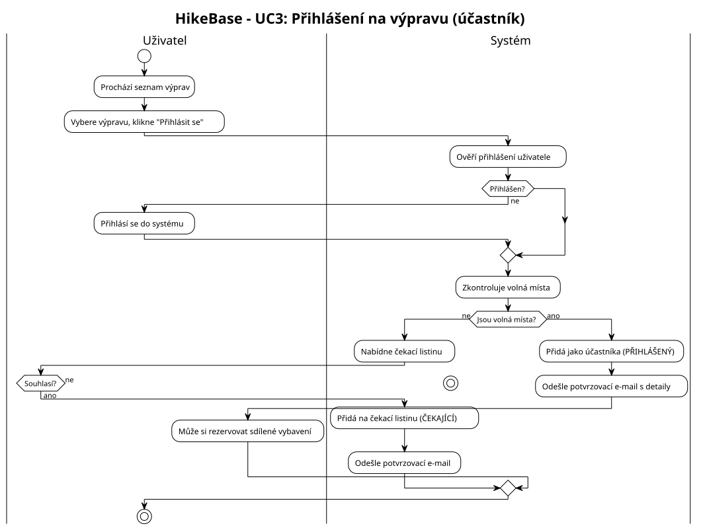
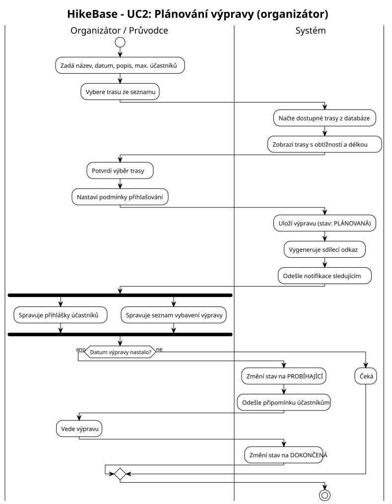
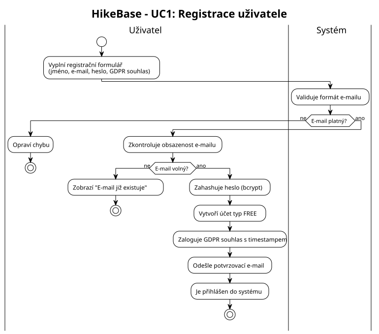
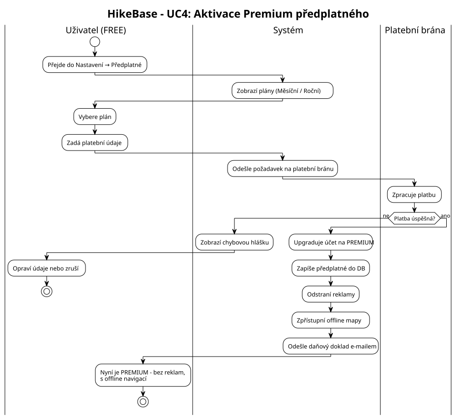
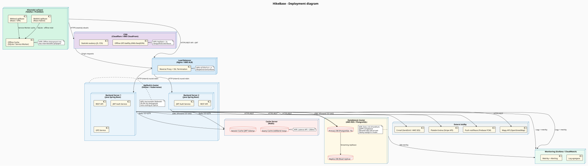

Správa tras
Evidence, vytváření a plánování turistických tras.
Informační systém zaměřený na plánování turistických tras, organizaci výprav, správu účastníků a sdílení zkušeností z přírody.
Základní funkce a cíle aplikace.
Evidence, vytváření a plánování turistických tras.
Organizace turistických akcí a expedic.
Registrace a správa přihlášených uživatelů.
Ukládání fotografií z uskutečněných výletů.
Recenze a doporučení tras od komunity.
Offline mapy, exporty a rozšířené statistiky.
Funkční požadavky rozdělené do kategorií.
| ID | Název | Popis | Role | Priorita | Zdroj |
|---|---|---|---|---|---|
| FR-U01 | Registrace uživatele | Uživatel se registruje zadáním jména, příjmení, e-mailu a hesla. Systém zahashuje heslo (bcrypt), vytvoří účet s typem FREE a odešle potvrzovací e-mail. | Host | Vysoká | Prompt.md · Activity UC1 · Class: UzivatelService |
| FR-U02 | Přihlášení / Odhlášení | Uživatel se přihlásí e-mailem a heslem. Systém vydá JWT token s časovým omezením. Podporuje OAuth2 / OpenID Connect (Google, Facebook, Apple). | Všechny role | Vysoká | PDF str. 5 · Class: JwtService |
| FR-U03 | Správa profilu | Přihlášený uživatel může upravit jméno, e-mail, heslo a nastavení soukromí. Administrátor může upravit jakýkoliv profil. | Běžný uživatel, Admin | Vysoká | Prompt.md · Class: UzivatelController PUT /api/users/{id} |
| FR-U04 | Správa rolí a oprávnění (RBAC) | Systém podporuje 6 rolí: Host, Běžný uživatel, Prémiový předplatitel, Organizátor/Průvodce, Moderátor, Administrátor. Každá role má definovanou sadu oprávnění. | Admin | Vysoká | PDF str. 3 · Prompt.md – Role a oprávnění · Class: TypUctu enum |
| FR-U05 | Blokování uživatele | Moderátor může navrhnout blokování, administrátor může dočasně nebo trvale zablokovat uživatele při porušení pravidel komunity. | Moderátor, Admin | Střední | PDF str. 4 · Prompt.md – GDPR a pravidla |
| ID | Název | Popis | Role | Priorita | Zdroj |
|---|---|---|---|---|---|
| FR-T01 | Plánování trasy | Uživatel zadá výchozí a cílové body. Systém navrhne optimální trasu a zobrazí vzdálenost, odhadovaný čas, převýšení a profil trasy. Integrace s OpenStreetMap / Mapbox. | Běžný uživatel, Premium | Vysoká | PDF str. 2 · Class: TrasaService · ER: Trasa |
| FR-T02 | Výškový profil trasy | Pro každou trasu se generuje výškový profil a celkové stoupání/klesání. Data jsou uložena jako GPS souřadnice s nadmořskou výškou. | Běžný uživatel | Vysoká | Prompt.md · ER: Trasa.prevyseni_m · Class: GpsKoordinat.nadmorskaVyska |
| FR-T03 | Hodnocení tras | Uživatelé hodnotí trasy hvězdičkami (1–5) a píší recenze. Systém zobrazuje průměrné hodnocení a top-trasy podle regionu. | Běžný uživatel | Vysoká | Prompt.md · ER: HodnoceniTrasy · Class: HodnoceniTrasy |
| FR-T04 | Offline stahování trasy | Prémiový uživatel si může stáhnout trasu pro offline použití (GPX/KML export). Mobilní aplikace ukládá data do lokálního úložiště (SQLite). | Premium | Vysoká | Prompt.md · Class: TrasaService.exportOffline() · Deployment: Offline Cache |
| FR-T05 | 3D vizualizace terénu | Prémiový uživatel si může trasu virtuálně projít pomocí interaktivní 3D mapy – prohlídka klíčových míst a převýšení předem. | Premium | Střední | PDF str. 4 · Prompt.md – Unikátní funkce |
| FR-T06 | Offline navigace s bezpečnostními značkami | Mapový modul podporuje offline režim s barevnými značkami pro zdroje vody, toalety, bivak, lavinové zóny a sesuvy. Zobrazuje upozornění na nepříznivé počasí. | Premium | Střední | PDF str. 4 · Prompt.md · Deployment: GpsFiles CDN |
| FR-T07 | Import/Export GPX a KML | Prémiový uživatel může importovat trasy ve formátu GPX/KML z externích aplikací a exportovat vlastní trasy v těchto formátech. | Premium | Střední | PDF str. 5 · Class: TrasaService.exportOffline() · GpsService |
| FR-T08 | Vyhledávání a filtrování tras | Uživatel může vyhledávat trasy full-textově (ElasticSearch) a filtrovat podle obtížnosti, délky, regionu a offline dostupnosti. | Host, Běžný uživatel | Vysoká | PDF str. 5 · ER: Trasa.obtiznost · Class: TrasaRepository.searchByNazev() |
| ID | Název | Popis | Role | Priorita | Zdroj |
|---|---|---|---|---|---|
| FR-V01 | Vytvoření výpravy | Organizátor vytvoří výpravu s názvem, datem, maximálním počtem účastníků a přiřadí trasu. Výprava prochází stavy: PLÁNOVANÁ → PROBÍHAJÍCÍ → DOKONČENÁ / ZRUŠENÁ. | Organizátor | Vysoká | Activity UC2 · ER: Vyprava · Class: VypravaService · StavVypravy enum |
| FR-V02 | Přihlášení a odhlášení účastníka | Uživatel se přihlásí na výpravu. Systém kontroluje volná místa. Při plné kapacitě nabídne čekací listinu (stav ČEKAJÍCÍ). Automaticky notifikuje při uvolnění místa. | Běžný uživatel | Vysoká | Activity UC3 · ER: Ucastnik_Vypravy · Class: VypravaService.prihlasitUcastnika() |
| FR-V03 | Správa účastníků organizátorem | Organizátor může potvrdit nebo odmítnout přihlášky (při výpravě se schválením), zobrazit seznam účastníků s kontakty a rolemi, a exportovat seznam. | Organizátor | Vysoká | Prompt.md · Activity UC2 · Class: VypravaController GET /ucastnici |
| FR-V04 | Správa vybavení výpravy | Organizátor spravuje checklist vybavení. Funkce „sdílený batoh" umožňuje rozdělit vybavení mezi účastníky. Uživatelé si mohou vzájemně půjčovat vybavení. | Organizátor, Běžný uživatel | Střední | PDF str. 5 · ER: Vybaveni, Pujceni_Vybaveni · Class: Vybaveni |
| FR-V05 | Skupinové plánování a hlasování | Účastníci výpravy mohou hlasovat o variantách trasy, navrhovat změny a sdílet checklist vybavení v rámci skupiny. | Běžný uživatel, Premium | Střední | PDF str. 5 · Prompt.md – Unikátní funkce |
| FR-V06 | Historie výprav | Uživatel má přehled svých minulých výprav s parametry a statistikami. Může archivovanou trasu znovu použít nebo sdílet zážitky. | Běžný uživatel | Vysoká | Prompt.md · ER: Vyprava · Class: VypravaRepository.findByOrganizator() |
| FR-V07 | Automatická změna stavu výpravy | Systém automaticky změní stav výpravy na PROBÍHAJÍCÍ v den zahájení a na DOKONČENÁ po datu konce. Odešle notifikace účastníkům. | Systém | Střední | Activity UC2 · Class: VypravaService.aktualizovatStav() · NotifikaceService |
| ID | Název | Popis | Role | Priorita | Zdroj |
|---|---|---|---|---|---|
| FR-M01 | Nahrávání fotografií | Uživatel nahraje fotografie a přiřadí je ke konkrétní trase nebo místu. Fotky jsou ukládány s GPS souřadnicemi a časem pořízení (pouze po souhlasu uživatele – GDPR). | Běžný uživatel | Vysoká | Prompt.md · PDF str. 2 · ER: (Foto entita, S3 úložiště) · Deployment: S3 |
| FR-M02 | Moderace obsahu | Moderátor může upravovat nebo odstraňovat nevhodné fotografie, příspěvky a recenze. Může navrhnout blokování uživatele administrátorovi. | Moderátor | Střední | PDF str. 3 · Prompt.md – Role: Moderátor |
| FR-M03 | Gamifikace – odznaky a žebříčky | Uživatelé získávají odznaky za dosažení vrcholů, absolvování tras v různých ročních obdobích a sbírání odpadků (foto-důkaz). Zobrazují se žebříčky zodpovědných turistů. | Běžný uživatel | Nízká | PDF str. 5 · Prompt.md – Gamifikace |
| FR-M04 | Integrace s průvodci a lokálními komunitami | Uživatelé mohou kontaktovat certifikované průvodce, rezervovat jejich služby a zobrazit doporučení na méně známé cesty. | Běžný uživatel, Organizátor | Nízká | PDF str. 5 · Prompt.md – Integrace s průvodci |
| FR-M05 | Ubytování v reálném čase | Integrace s rezervačními systémy horských chat a kempů. Uživatel při plánování vidí aktuální dostupnost ubytování a může přizpůsobit trasu. | Premium | Střední | PDF str. 4 · Deployment: External Services |
| FR-M06 | Integrace s počasím | Systém zobrazuje aktuální předpověď počasí a výstrahy pro oblast plánované trasy. Upozorní uživatele na nepříznivé podmínky. | Premium | Střední | PDF str. 5 · Deployment: Weather API |
| ID | Název | Popis | Role | Priorita | Zdroj |
|---|---|---|---|---|---|
| FR-P01 | Aktivace Premium předplatného | Uživatel vybere plán (měsíční / roční), zadá platební údaje. Systém zpracuje platbu přes platební bránu (Stripe), upgraduje účet, odstraní reklamy a zpřístupní prémiové funkce. Odešle daňový doklad. | Běžný uživatel | Vysoká | Activity UC4 · ER: Predplatne · Class: PredplatneService, PlatebniGateway |
| FR-P02 | Zrušení předplatného | Uživatel může předplatné kdykoli zrušit. Přístup k prémiovým funkcím trvá do konce zaplaceného období. Systém zaznamená datum zrušení. | Premium | Vysoká | Class: PredplatneService.zrusit() · ER: Predplatne.aktivni |
| FR-P03 | Balíček Guide | Speciální balíček pro průvodce a organizátory: vytváření placených výprav, správa plateb od účastníků, nabídka tréninkových plánů, provize z ubytování. | Organizátor | Střední | Prompt.md · PDF str. 5 – Speciální balíček Guide |
| FR-P04 | Zobrazení reklam (FREE verze) | Uživatelé FREE verze vidí reklamy respektující soukromí – bez personalizace bez souhlasu (GDPR). Reklamy nejsou zobrazovány prémiovým uživatelům. | Host, Běžný uživatel | Střední | Prompt.md · PDF str. 5 · ER: Reklama |
Výkonnostní, bezpečnostní a provozní požadavky systému.
| ID | Kategorie | Požadavek | Měřitelné kritérium | Zdroj |
|---|---|---|---|---|
| NFR-01 | Výkon | Odezva REST API musí být rychlá i při běžné zátěži. | Latence API < 200 ms (p95). Stránka < 2 s. | Redis cache, CDN |
| NFR-02 | Dostupnost | Systém musí být provozuschopný bez plánovaných výpadků. | SLA 99,9 % (max. ~8,7 h výpadku ročně). | Kubernetes cluster, replica DB |
| NFR-03 | Škálovatelnost | Systém musí zvládnout nárůst počtu uživatelů bez degradace výkonu. | Auto-scaling při >70 % CPU. Min. 10 000 souběžných uživatelů. | AppCluster, Load Balancer |
| NFR-04 | Bezpečnost | Veškerá komunikace musí být šifrována. Data musí být chráněna. | HTTPS/TLS 1.3. bcrypt cost ≥ 12. AES-256 at-rest. JWT s expirací. | SSL Termination, JwtService |
| NFR-05 | Offline podpora | Mobilní aplikace musí fungovat bez připojení pro základní navigaci. | Trasy v SQLite / Service Worker. Sync do 30 s po obnovení. | Offline Cache, GpsService |
| NFR-06 | Zálohování | Data musí být pravidelně zálohována a obnovitelná v krátkém čase. | Zálohy DB každých 6 h. RTO < 1 hod. Streaming replikace primary → replica. | DBCluster replica, Monitor |
| NFR-07 | Monitoring | Systém musí detekovat anomálie a upozorňovat provozní tým. | Grafana / CloudWatch. Alert při >5 % chybovosti nebo latenci >500 ms. | Monitor node |
| NFR-08 | Lokalizace dat | Osobní data uživatelů z EU musí být uložena výhradně v EU. | DB a S3 v AWS Frankfurt (eu-central-1). | DBCluster NFR note |
| NFR-09 | Použitelnost | Aplikace musí být intuitivní a přístupná na všech zařízeních. | Responzivní design. WCAG 2.1 AA. iOS 14+ a Android 10+. | React Native / React |
| NFR-10 | Udržovatelnost | Kód musí být modulární a dobře dokumentovaný pro snadnou údržbu. | Controller → Service → Repository. CI/CD. Pokrytí testy >80 %. | SDLC, Class diagram |
Implementace ochrany osobních údajů dle nařízení EU 2016/679.
| ID | Článek GDPR | Požadavek | Implementace v systému | Zdroj |
|---|---|---|---|---|
| GDPR-01 | Čl. 6 – Zákonnost | Před zpracováním citlivých údajů musí uživatel udělit explicitní souhlas. | Souhlas při registraci (checkbox). Uzivatel.gdpr_souhlas + gdpr_datum. Zalogování s timestampem. | ER: Uzivatel · Activity UC1 |
| GDPR-02 | Čl. 7 – Odvolání | Uživatel může kdykoli odvolat souhlas se zpracováním. | Nastavení profilu – odvolání souhlasu. Systém přestane zpracovávat geolokaci a odstraní záznamy. | UzivatelService |
| GDPR-03 | Čl. 15 – Přístup | Uživatel může požádat o export všech svých osobních dat. | GET /api/users/{id}/gdpr-export → kompletní export (JSON/PDF). UzivatelService.exportGdprData(). | UzivatelController |
| GDPR-04 | Čl. 17 – Výmaz | Uživatel může požádat o smazání účtu a všech osobních dat do 30 dnů. | DELETE /api/users/{id}. Kaskádové smazání nebo anonymizace v PostgreSQL. Smazání fotografií z S3. | UzivatelController DELETE |
| GDPR-05 | Čl. 5 – Minimalizace | Sbírají se pouze nezbytná data. Logy jsou anonymizovány. | Fotografie s GPS jen po souhlasu (FR-M01). Analytická data anonymizována. Logy neobsahují PII. | Monitor, Prompt.md |
| GDPR-06 | Čl. 13 – Transparentnost | Aplikace poskytuje jasně formulované zásady ochrany osobních údajů. | Stránka Zásady soukromí a Podmínky použití dostupné z každé stránky. Zobrazeny při registraci. | Prompt.md – Transparentnost |
Prohlížení veřejných informací.
Účast na výpravách a hodnocení tras.
Přístup k rozšířeným funkcím.
Správa systému a moderace obsahu.
Kliknutím otevřeš diagram na celou obrazovku.







